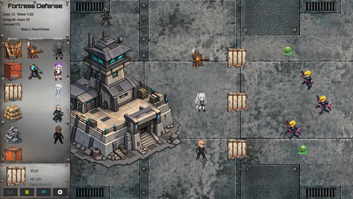
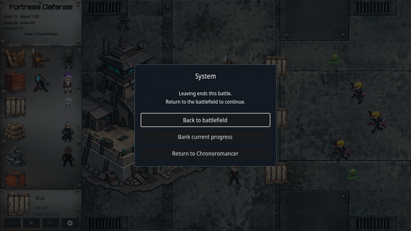

Player wiki noticeThis community-maintained page may contain gameplay, story, and mature-content spoilers.
概览
Tower Defense (TD) 结合了部署的陆军,购买的炮塔,防御屏障,以及玩家自己的射程武器.在敌人从右边靠近时保护左边的建筑,在Lives到达零前清除每波.
战斗开始了 哥多特语。在Windows上,它打开了自己的战斗窗口;主游戏等待您返回。支持的Android构建使用了嵌入式的TD运行时间。战斗遵循了主游戏选择的语言。
此指南涵盖当前可玩系统, 并与游戏对照 2026年10月4日 (中文(简体) ).列出了征聘和战斗准入要求,但没有披露故事结果。

开始
- 完成 Story第31集 打开隐藏防御和操作中心路线 Cid的地下诊所.
- 输入 审查TD名册 见到新兵,装备,英雄EXP,和训练。
- 使用要塞车间进行永久改进. Steamshot已经购买;其他7座炮塔设计需要初始购买.
- 发动战斗,放置小防线,留下足够资源应对后来的敌人.
- 以左下角的波键启动波。在调整位置时使用暂停, 并在出现新威胁时返回正常速度 。
- 在两次尝试中,挣得的英雄EXP用于培训,共用的陆军EXP用于车间研究.通过垦湾获取升级材料.
主战防守行动和要塞室旅行费用 0分钟. Orchid 单独的队列处理动作费用 60分钟.
战斗和准入
| 作战行动 | 何处 | 要求 | 运动浪潮 |
|---|---|---|---|
| 保护隐藏 | 地下抵抗隐藏处 | Story第31集完成 | 10 |
| 保卫要塞 | 手术中心,通过Cid的地下诊所进入 | 操作中心在 Story 后解锁 31次 | 20 |
| 保卫辛迪加之门 | 辛迪加门 | Story 击打85和我们的战争都完成了 | 25 |
一个真正的竞选 明确解锁 该特定地图的无限模式。清除地图的未来发射使用无限模式。清除不同的地图不会在此解锁。
笔记本的 塔防Story要求 设置控制该故事是否要求隐藏在Beat 32之前和Fortress之前清除。它默认为Windows/Linux,而默认为Android/macOS。关闭它会绕过这些故事门;它确实 没有 授予胜利, EXP, 已完成的波, 或无限模式。当前桌面战斗启动器支持 Windows; Linux 设置本身并不能使 Linux TD 构建可用 。
完整波浪名册和敌人奖赏: 波浪和敌人.
控制和接口
| 行动 | 控件 |
|---|---|
| 部署 | 选择左栏的屏障、炮塔或英雄; 单击或点击有效的战场位置 |
| 取消放置或移动 | 右键单击、 逃逸或屏幕上取消控制 |
| 检查部署的部队 | 单击或点击以显示当前健康和数据 |
| 移动部署的单位 | 选择它,按它的绿色 M 按钮,然后选择新位置 |
| 下一波开始 | 无波时左下波按钮 |
| 暂停或恢复 | 播放/暂停控制 |
| 战斗速度 | 速度控制或键盘 1 / 2 / 3 用于×1/×2/×3 |
| 滚开战场 | 数据/数据,左/右箭头,拖动战场,或将指针移到其侧面 |
| 玩家枪 | 在未停放的活跃波浪中点击/拖动战场,不进行放置或移动 |
| 改变枪械位置 | R级环绕防御工事的三个阵地 |
| 预览选中的英雄动画 | 选择已部署的英雄并按下 页:1;此预览动画 |
| 银行奖励或休假 | Gear 图标— 系统菜单 |
英雄战斗特技自动激活 当他们的冷却和目标条件得到满足时。 S 键预览动画;它不会手动触发战斗效果或花费其冷却。
移动是自由的,可以保护当前的破坏。它不会治愈一个单元,还原原成本,消耗另一个屏障供应,或者允许一个撤回的英雄再次部署。 建筑物、放置物体和敌人产卵区会阻碍重叠部署。
资源和部署限制
每一个新的尝试开始 220次救护、160次安莫和200次以上的现任领导指挥开始于 12,随着堡垒复原力研究的增加, 30.
救援, Ammo, 和司令部都是战斗的部署资源。 杀戮和清波奖金补充了它们。它们与永久的分开 。 碎屑、合金、电路、试剂、奢侈品和原始芯片 剩余战斗货币不会成为垦殖材料。
- 每个英雄都可以部署 每场战斗一次失去或提取英雄 利用部署来进行这次尝试
- 涡轮有一个共享的活性极限: 3–12,加单独的每个设计限制。摧毁的炮塔释放了一个活动槽,但替换仍然需要战斗资源。
- Orchid的8个常规屏障设计中,每个都有自己的设计. 整个战斗供应销毁不会退款,清理波则不会再充电。
- 树和金石盾牌门 每个设计5份有效副本带着他们需要的英雄活着和部署
- 失去的生命不会在波之间恢复,障碍修复不会修复生命.
玩家武器和街机
玩家的装备 射程武器级别 设置手动射击损坏。 能力 改进目标响应; 增强100以上的能力逐渐减少子弹的散射量, 使其最小的散射量达到1000。 枪的射击间隔使用实时,因此选择 ×3 战斗速度不会三重手动射击 。
手动射击 没有 在没有有效射程武器的情况下,该枪不会造成任何伤害。
四个 启动 奖项来源 神经定点 还在TD工作:
| 激活奖 | TD 枪效 |
|---|---|
| 电池种子 | 重复射击时保持主射击 |
| 扩展的 Ammo 大小写 | 每秒增加25%的镜头:间隔从0.275秒降至0.22秒 |
| 装甲射击回合 | 子弹沿着它的路穿过每一个敌人,每击中一次 |
| 里波尔语 | 双重手动射击损坏 |
全部四堆。 单凭街机得分是不够的: 启动奖品菜单中的奖品。这些奖金会影响 玩家的枪而不是英雄或炮塔武器
经验和领导
最后的打击决定了EXP的所有权. 英雄个人杀人奖 英雄奖 英雄EXP (英语).. 共享玩家枪和炮塔最终击球奖 陆军EXP。一个杀手不能同时被分配到两个游泳池。失败和提前返回仍然可以保留挣得的EXP。
英雄EXP为那个英雄的六次训练统计支付费用,陆军EXP为永久炮塔,要塞控制,以及常规阻力升级支付费用. Armor使用的材料和核心没有陆军EXP.
一旦玩家学会了 领导 并至少有1名领导者开始尝试,每 10波完全清除 裁决 +1 领导:波浪 10, 20, 30 等。这在战役和无限模式的每张地图上都有效,没有增益上限, 并在每次新尝试中再次开始计数 。它不会在“ 领导” 仍然锁定时教授技能 。 更高的命令启动预算适用于下一次尝试 。
无穷模式
无限模式重复了地图作者的战役波与额外的敌方群,没有终端胜利波,其波数持续上升,而不是重置模板的数.
敌人健康与攻击破坏规模 1.1^(波−1) 。速度和基本命中货币的回报不会收到这种波乘数。 6.12倍 健康与破坏
无限杀 EXP 增加一个 每20波25个百分点:
| 实际无限波 | 杀死 EXP 乘数 |
|---|---|
| 1–20 | 100% |
| 21–40 | 125% |
| 41–60 | 150% |
| 61–80 | 175% |
| 20波区之后的每一个 | +25个百分点 |
小额EXP被保留到所有奖励银行,而不是丢弃在每一个小杀手身上。 培训数据芯片的个人杀伤奖金也适用于持卡人。
银行业和回归

打开齿轮菜单并选择 银行目前的进展 在不结束实战的情况下 保持尝试的回报 回到战场上 继续,或 返回到 Chronoromancer 正常的返回也试图将当前的进展记录在案。
银行业保留了赚取的EXP, 销毁/收回记录, 以及完全清除波段的进展。 不是一个可恢复的战场: 放置单位,敌方位置,以及战斗货币不恢复为稍后的暂停战斗. 胜利/失败完成尝试; 下一次发射开始新鲜的一次.
如果战斗出乎意料的结束,最后一次成功的银行奖励可以被主游戏收回. 不明的当前波不计为完成的波. 重复的银行业务或加载不会反复授予同一检查站的EXP或领导.
实际作战咨询
从紧凑的防御区开始,这个防御区将射程单位控制在接近的范围之内。 障碍物可以买到射击时间,但敌人可以绕着一个孤立的障碍移动;观察整个战场,而不是假设一个墙封住每个路线。
让 Melee新兵保持足够接近接触,保护脆弱的范围新兵,并在撤退前移动受损部队。 节省资源用于替换和后期波浪构成。在实际需要修复的结构附近使用Nanite灯塔;它们不会治愈英雄。
关于讲习班进展,比较 涡轮控制炮塔损坏, 结构强化,并且每个设计屏障的供给会给您带来损失。如果您的有效限值无法放置,则加固的炮塔将无济于事; 更多的屏障 健康无法补充耗尽的设计供给。
决定您需要的 EXP 池。让一个英雄为个人训练而安全地杀死,或者在将 Army EXP 保存用于研究时使用玩家的枪/炮塔 。
相关指南
Overview
Tower Defense (TD) combines a deployed Army, purchased turrets, defensive barriers, and the player's own ranged weapon. Protect the building on the left while enemies approach from the right. Clear every wave before Lives reach zero.
The battle runs in Godot. On Windows it opens its own battle window; the main game waits for you to return. Supported Android builds use the embedded TD runtime. The battle follows the main game's selected language.
This guide covers the current playable system, checked against the game on 4 October 2026. Recruitment and battle access requirements are listed without revealing story outcomes.
Getting Started
- Finish Story Beat 31 to open Hideout defense and the Operations Center route through Cid's Underground Clinic.
- Enter Barracks → Review TD Roster to see recruits, equipment, Hero EXP, and training.
- Use the fortress workshops for permanent improvements. Steamshot is already purchased; the other seven turret designs need an initial purchase.
- Launch a battle, place a small defensive line, and leave enough resources to respond to later enemies.
- Start the wave with the bottom-left wave button. Use Pause while adjusting positions, and return to normal speed when a new threat appears.
- Between attempts, spend earned Hero EXP on training and shared Army EXP on workshop research. Obtain upgrade materials through Reclamation Bay.
The main-game defense actions and fortress room travel cost 0 minutes. Orchid's separate queue-processing action costs 60 minutes.
Battles and Access
| Battle action | Where | Requirement | Campaign waves |
|---|---|---|---|
| Defend the Hideout | Underground Resistance Hideout | Story Beat 31 completed | 10 |
| Defend the Fortress | Operations Center, entered through Cid's Underground Clinic | Operations Center unlocked after Story Beat 31 | 20 |
| Defend the Syndicate Gates | Syndicate Gates | Story Beat 85 and Our War both completed | 25 |
An actual campaign clear unlocks Infinite mode for that particular map. Future launches of the cleared map use Infinite mode. Clearing a different map does not unlock it here.
The Notebook's Tower Defense Story Requirements setting controls whether the story demands the Hideout clear before Beat 32 and Fortress clear before Beat 76. It defaults on for Windows/Linux and off for Android/macOS. Turning it off bypasses those story gates; it does not award victory, EXP, completed waves, or Infinite mode. The current desktop battle launcher supports Windows; the Linux setting alone does not make a Linux TD build available.
Full wave rosters and enemy rewards: Waves and Enemies.
Controls and Interface
| Action | Control |
|---|---|
| Deploy | Select a barrier, turret, or hero in the left column; click or tap a valid battlefield position |
| Cancel placement or moving | Right-click, Escape, or the on-screen cancel control |
| Inspect a deployed unit | Click or tap it to show its current Health and stats |
| Move a deployed unit | Select it, press its green M button, then choose the new position |
| Start the next wave | Bottom-left wave button when no wave is running |
| Pause or resume | Play/Pause control |
| Battle speed | Speed control, or keyboard 1 / 2 / 3 for ×1 / ×2 / ×3 |
| Scroll the battlefield | A / D, Left/Right arrows, drag the battlefield, or move the pointer near its sides |
| Player gun | Click/tap the battlefield during an active, unpaused wave with no placement or move pending |
| Change gun position | R, cycling three positions around the defended building |
| Preview selected hero's animation | Select a deployed hero and press S; this previews the animation |
| Bank rewards or leave | Gear icon → System menu |
Hero combat specials activate automatically when their cooldown and target conditions are satisfied. The S key previews the animation; it does not manually trigger the combat effect or spend its cooldown.
Moving is free and preserves current damage. It does not heal a unit, refund its original cost, consume another barrier supply, or allow a withdrawn hero to deploy again. Buildings, placed objects, and the enemy spawn area block overlapping deployments.
Resources and Deployment Limits
Every fresh attempt starts with 220 Salvage, 160 Ammo, and 200 + current Leadership Command. Lives start at 12, increasing with Fortress Resilience research to 30.
Salvage, Ammo, and Command are battle-only deployment resources. Kills and cleared-wave bonuses replenish them. They are separate from the permanent Scraps, Alloy, Circuitry, Reagents, Flux, and Pristine Cores used by the workshops. Leftover battle currency does not become Reclamation materials.
- Each hero can deploy once per battle. Losing or extracting that hero uses up the deployment for this attempt.
- Turrets have a shared active limit of 3–12, plus a separate per-design limit. Destroyed turrets free an active slot, but replacement still costs battle resources.
- Each of Orchid's eight regular barrier designs has its own whole-battle supply. Destruction does not refund it, and clearing a wave does not refill it.
- Trees and Kinetic Shield Gates instead have five active copies per design, with their required hero alive and deployed.
- Lost Lives are not restored between waves. Barrier repairs do not repair Lives.
Player Weapon and Arcade Bonuses
The player's equipped Ranged Weapon level sets manual-shot damage. A higher Ability improves aim response; increasing Ability above 100 progressively reduces bullet spread, reaching its minimum spread at 1,000. The gun's firing interval uses real time, so selecting ×3 battle speed does not triple manual fire.
Manual shots do not consume the Ammo deployment balance. With no effective ranged weapon, the gun contributes no damaging shot.
Four activated prizes from Neural Targeting also work in TD:
| Activated prize | TD gun effect |
|---|---|
| Gatling Feed | Hold primary fire for repeated shots |
| Expanded Ammo Case | 25% more shots per second: interval decreases from 0.275 to 0.22 seconds |
| Armor-Piercing Rounds | Bullet passes through every enemy along its path, hitting each once |
| RIP | Double manual-shot damage |
All four stack. Reaching the arcade score by itself is insufficient: activate the prize in its prize menu. These bonuses affect the player's gun, not hero or turret weapons.
Experience and Leadership
Final blows determine EXP ownership. A hero's personal kills award that hero Hero EXP. Player-gun and turret final blows award shared Army EXP. One kill is not simultaneously assigned to both pools. Defeat and an early return can still retain earned EXP.
Hero EXP pays for that hero's six training stats. Army EXP pays for permanent turret, fortress-control, and regular-barrier upgrades. Armor uses materials and Cores without Army EXP.
Once the player has learned Leadership and has at least 1 Leadership when starting the attempt, every 10 fully cleared waves awards +1 Leadership: waves 10, 20, 30, and so on. This works on every map in campaign and Infinite mode, has no gain cap, and starts counting again in each new attempt. It does not teach the skill when Leadership is still locked. The higher Command starting budget applies to the next attempt.
Infinite Mode
Infinite mode repeats that map's authored campaign waves with additional enemy groups. It has no terminal victory wave. Its wave number continues rising rather than resetting to the template's number.
Enemy Health and attack damage scale by 1.1^(wave − 1) in both modes. Speed and base kill-currency rewards do not receive this wave multiplier. Wave 20 is approximately 6.12 times the Wave-1 Health and damage.
Infinite kill EXP gains an additional 25 percentage points every 20 waves:
| Actual Infinite wave | Kill EXP multiplier |
|---|---|
| 1–20 | 100% |
| 21–40 | 125% |
| 41–60 | 150% |
| 61–80 | 175% |
| Each following 20-wave block | +25 percentage points |
Fractional EXP is retained across reward banking rather than discarded on every small kill. A Training Data Chip's personal-kill bonus also applies to its bearer.
Banking and Returning
Open the gear menu and select Bank current progress to preserve the attempt's earned rewards without ending the live battle. Choose Back to battlefield to continue, or Return to Chronoromancer to leave. A normal return also attempts to bank current progress.
Banking preserves earned EXP, kill/retreat records, and fully cleared-wave progress. It is not a resumable battlefield save: placed units, enemy positions, and battle currency are not restored as a paused battle later. Victory/defeat finishes the attempt; the next launch starts a fresh one.
If the battle closes unexpectedly, the last successfully banked rewards can be recovered by the main game. An uncleared current wave does not count as a completed wave. Repeated banking or loading does not repeatedly award the same checkpoint's EXP or Leadership.
Practical Battle Advice
Start with a compact defended area that keeps ranged units in range of the approach. Barriers buy firing time, but enemies can move around an isolated obstacle; watch the whole battlefield instead of assuming one Wall seals every route.
Keep melee recruits close enough to make contact, protect fragile ranged recruits, and move damaged units before they withdraw. Save resources for replacements and later wave compositions. Use Nanite Beacons near structures that actually need repairs; they do not heal heroes.
For workshop progression, compare Turret Control, turret damage, Structural Reinforcement, and per-design barrier supply with the problem causing your losses. A stronger turret cannot help if your active limit prevents placing it; more barrier Health cannot replenish an exhausted design's supply.
Decide which EXP pool you need. Let a hero secure kills for personal training, or use the player's gun/turrets when saving Army EXP for research.
Related Guides
Text adapted from the community-maintained Chronoromancer Wiki under CC BY-SA 4.0.